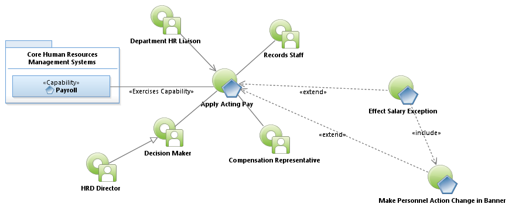
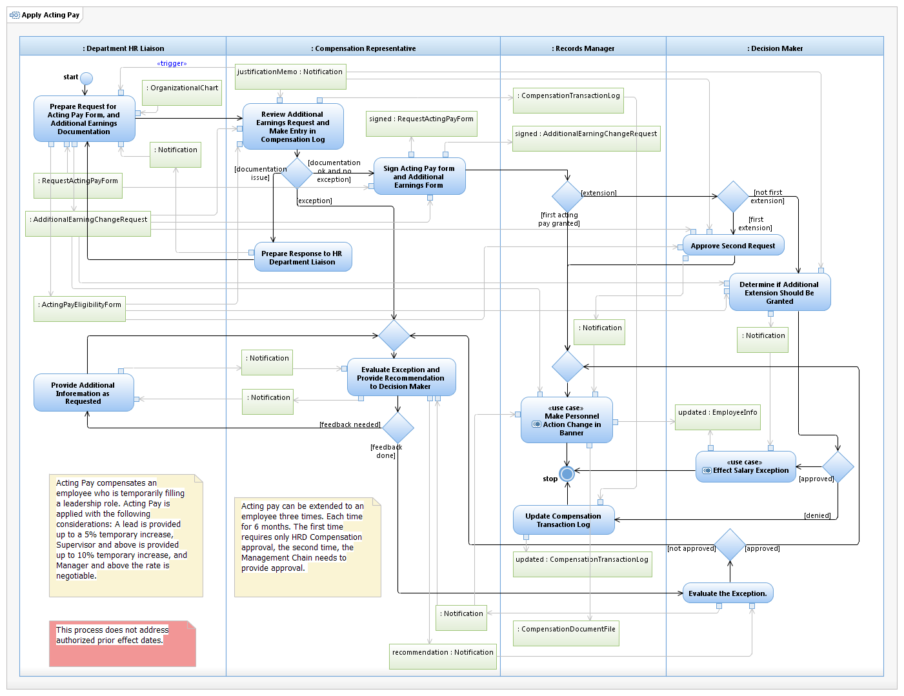

Use Case Model: Apply Acting Pay
Architect: Aaron Brown, IT Enterprise Architect Senior
Date Last Modified: 2/19/2012
User Review: Holly Moyer, Tommy Tucker
Date: 02/19/2013
Compensation for a temporary staffing assignment of lead or supervisory/managerial responsibilities that may have resulted in a change in staffing assignments and span of control.
Follow link to Role Definitions

Use Case Model: Apply Acting Pay

Activity Model: Apply Acting Pay
Activity Documentation
| Activity | Documentation |
|---|---|
| Prepare Request for Acting Pay Form, and Additional Earnings Documentation | The Department HR Liaison fills out the Additional Earnings form, checking "Acting Pay". |
| Review Additional Earnings Request and Make Entry in Compensation Log | The Department HR Liaison has been instructed by management or appropriate leadership, that a job acting pay (additional earnings) should take place. The Business Case Letter includes the increase rate and the time frame. |
| Prepare response to HR Department Liaison | The Department HR Liaison has been instructed by management or appropriate leadership, that a job reassignment should take place. The Business Case Letter includes the position title. The Liaison provides the Class and Job codes on the Personal Action form. |
Note: When the activity is self explanatory no documentation is provided.